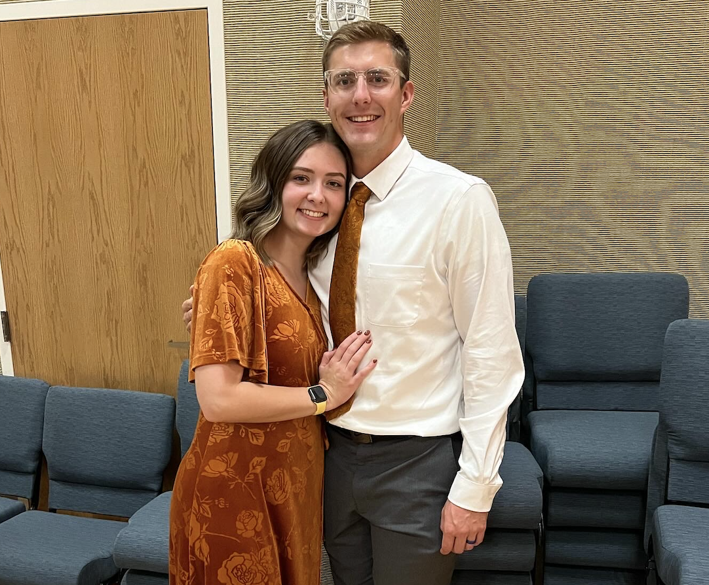

About Me
Hello, I am Eli. I am in the United States Army National Guard in Oklahoma. I have on of the coolest jobs that are aviable to national guardsman. I am a UH-60 blackhawk repairman. I hope to go to flight school here in a year which would be a dream come true. I absolutely love my job and think that it is the best. I am married, expecting my first child. I am very exited to be in this class. There is still so much to learn and be able to do.
Oklahoma Army National Guard
Lets learn some fun facts about the Oklahoma national Guard. "The Oklahoma National Guard, a division of the Oklahoma Military Department, is the component of the United States National Guard in the U.S. state of Oklahoma. It comprises both Army (OKARNG) and Air (OKANG) National Guard components. The Governor of Oklahoma is Commander-in-Chief of the Oklahoma National Guard when not on federal active duty." There are many differnt units and jobs you can have while you are also working or going to college full-time.